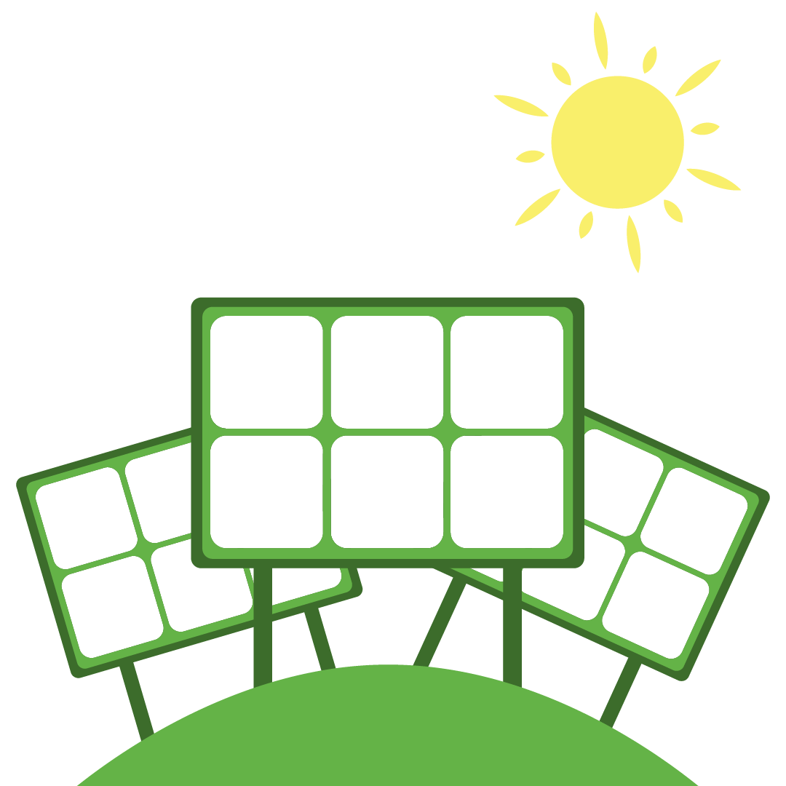

Las aplicaciones de la nanotecnología y los nanomateriales abarcan todo tipo de sectores industriales. Lo más habitual es encontrarlos en estas áreas:
| Electrónica |
Los nanotubos de carbono están cerca de sustituir al silicio como material para fabricar microchips y dispositivos más pequeños, veloces y eficientes, así como nanocables cuánticos más ligeros, conductores y resistentes. Las propiedades del grafeno lo convierten en un candidato ideal para el desarrollo de pantallas táctiles flexibles.
|  | Energía |
Un nuevo semiconductor ideado por la Universidad de Kyoto permite fabricar paneles solares que duplican la cantidad de luz solar convertida en corriente eléctrica. La nanotecnología también abarata costes, produce turbinas eólicas más fuertes y ligeras, mejora el rendimiento de los combustibles y, gracias al aislamiento térmico de algunos nanocomponentes, puede ahorrar energía.
| Biomedicina |
Las propiedades de algunos nanomateriales los hacen idóneos para mejorar el diagnóstico precoz y el tratamiento de enfermedades neurodegenerativas o del cáncer. Son capaces de atacar las células cancerígenas de forma selectiva sin dañar al resto de células sanas. Algunas nanopartículas también se han utilizado para la mejora de productos farmacéuticos como las cremas solares.
| Medio ambiente |
La purificación del aire con iones, la depuración de aguas residuales con nanoburbujas o los sistemas de nanofiltración para los metales pesados son algunas de sus aplicaciones positivas para el medioambiente. También existen nanocatalizadores para que las reacciones químicas resulten más eficientes y contaminen menos.
| Alimentación |
En este campo se podrían usar nanobiosensores para detectar la presencia de patógenos en los alimentos o nanocompuestos para mejorar la producción alimentaria al aumentar la resistencia mecánica y térmica, y disminuir la transferencia de oxígeno en los productos envasados.
| Textil |
La nanotecnología posibilita el desarrollo de tejidos inteligentes que ni se manchen ni se arruguen, así como de materiales más resistentes, ligeros y duraderos para fabricar cascos de moto o equipamiento deportivo.